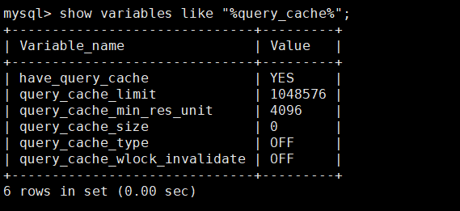
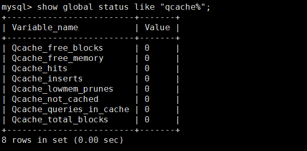

前言
从 MySQL 4.1 开始，增加了查询缓存（Query Cache，简称 QC）的功能，它会存储 select 语句的文本以及发送到客户端的结果。如果下一次收到一个相同的查询，就会从查询缓存中获得查询结果。
关于 QC 的详细定义，可以查询 MySQL 5.7 官方手册
那么是不是只要开启查询缓存就能提升查询速度呢？今天就一起探讨这一话题。
认识 QC
QC 需要缓存最新数据结果，因此表数据发生任何变化（insert、update、delete 等操作时），都会导致 QC 被刷新。
查询缓存相关的参数主要有：
1 | show variables like "%query_cache%"; |

这里解释一下上面几个参数
have_query_cache：服务器在安装时是否已经配置了高速缓存
query_cache_limit：单条查询能够使用的缓存区大小
query_cache_min_res_unit：查询缓存分配内存块的最小单位
query_cache_size：缓存区的大小，单位为 MB
query_cache_type：缓存类型，有三个值可选：
- 0 或者 off：关闭缓存
- 1 或者 on：打开缓存
- 2 或者 demand：只缓存带有 sql_cache 的 select 语句。
query_cache_wlock_invalidate：如果某个数据表被其它的连接锁住，是否仍然从查询缓存中返回结果
通过下面命令，可以监视查询缓存的使用情况：
1 | show global status like "qcache%"; |

这里解释一下各个参数的意义
Qcache_free_blocks：查询缓存中的空闲内存块的数目
Qcache_free_memory：查询缓存的空闲内存总数
Qcache_hits：缓存命中次数
Qcache_inserts：被加入到缓存中的查询数目
Qcache_lowmem_prunes：因为缺少内存而从缓存中删除的查询数目
Qcache_not_cached：没有被缓存的查询数目
Qcache_queries_in_cache：在缓存中已注册的查询数目
Qcache_total_blocks：查询缓存中的块的总数目
QC 的优劣
在讲到底要不要开启 QC 之前，我们先聊聊 QC 的优劣。
QC 优势：
- 提高查询速度：使用查询缓存在单行数据的表中搜索要比不使用查询缓存快 238%（数据来源：MySQL 5.7 官方手册）。
劣势：
- 比如执行的 SQL 都很简单（比如从只有一行的表中查询数据），但每次查询都不一样的话，打开 QC 后，额外的开销为 13% 左右；
- 如果表数据发生了修改，使用该表的所有缓存查询都将实效，并且从缓存中删除；
- QC 要求前后两次请求的 SQL 完全一样，不同数据库、不同协议版本或不同默认字符集的查询，都会被认为是不同的查询。甚至包括大小写，比如下面两条 SQL ，查询缓存就会认为是两个不同的查询：
1 | SELECT * FROM tbl_name |
- 每次更新 QC 的内存块都需要进行锁定；
- 可能会导致 SQL 查询时间不稳定，比如这个例子。
是否需要开启 QC
通过上面讲解的 QC 优劣，对于是否需要开启 QC 这个问题，我们大概能总结出：
如果线上环境中 99% 以上都是只读，很少更新，可以考虑全局开启 QC，也就是设置 query_cache_type 为 1。
很多时候，我们希望缓存的是几张更新频率很低的表，其它表不考虑使用查询缓存，就可以考虑将 query_cache_type 设置成 2 或者 DEMAND，这样就只缓存下面这类 SQL：
1 | select sql_cache ......; |
结合前面讲的 QC 的劣势，其它情况就不建议开启 QC 了。
4 怎样开启和关闭 QC
全局开启 QC：
在配置文件 my.cnf 中设置：
1 | query_cache_type = 1 |
只开启部分表的 QC：
在配置文件 my.cnf 中设置：
1 | query_cache_type = 2 |
前面也提到了，这种情况，如果要使用 QC，查询语句需要加上 select sql_cache。
关闭 QC：
在配置文件 my.cnf 中设置：
1 | query_cache_type = 0 |
或者源码编译安装 MySQL 的话，编译时增加参数 —without-query-cache 即可。
开启 QC 的注意事项
如果要开启 QC，建议不要设置过大，通常几十兆就好。如果设置过大，会增加维护缓存所需要的开销。
另外要注意一些即使开启 QC 也不能使用 QC 的场景（这里参考的是 MySQL 5.7 官方手册第 8.10.3.1 节： How the Query Cache Operates ）：
- 分区表不支持，如果涉及分区表的查询，将自动禁用查询缓存
- 子查询或者外层查询
- 存储过程、触发器中使用的 SQL
- 读取系统库时
- 类似下面 SQL 时：
1 | select ... lock in share mode |
- 用到临时表
- 产生了 warning 的查询
- 显示增加了 SQL_NO_CACHE 关键字的
- 如果没有全部库、表的 select 权限，则也不会使用 QC
- 使用了一些函数：比如 now ()，user ()，password () 等
了解上面的场景，我们就能知道：开了查询缓存，前后 SQL 一模一样，为什么后面这一次执行也使用不了缓存的原因了。
总结
查询环境会存储 select 语句的文本以及发送到客户端的结果。
如果使用查询缓存在单行数据的表中搜索要比不使用查询缓存快 238%。
如果线上环境中 99% 以上都是只读，很少更新，可以考虑全局开启 QC。如果希望缓存的是几张更新频率很低的表，其它表不考虑使用查询缓存，就可以考虑将 query_cache_type 设置成 2，这些需要使用查询缓存的表，使用时加上 select sql_cache 即可。
但是考虑到 QC 存在下面这些缺点，因此，其它情况就不建议开启 QC 了。
- 每次查询不一样，会额外增加开销
- 需要前后两条 SQL 完全一样才能使用
- 只要存在更新，就会清空这张表的查询缓存
- 等等
当然开启 QC 的情况下，部分查询是无法走 QC 的，需要留意到这些场景。
参考资料
https://dev.mysql.com/doc/refman/5.7/en/query-cache.html
https://dev.mysql.com/doc/refman/5.7/en/query-cache-operation.html
https://www.percona.com/blog/2012/09/05/write-contentions-on-the-query-cache/
《深入浅出 MySQL》第 2 版：23.2.2 使用查询缓存}

...
...
This is copyright.